alex@github ~ $ ./contributions.sh

alex@github ~ $ whoami
What I'm building
- Strev — training SaaS built around progressive overload: athlete tracking, trainer dashboards, video analysis. Live, in beta.
React 19 · Express 5 · MongoDB · Zod · Stripe
- VanguardIA — the harness I build everything else with. Specs before code, subagents that write to files instead of flooding the context, and a verification gate that has to pass before anything counts as done.
Claude Code · Python · Node · MCP
- Fleet Ops — day-to-day operation of 8 servers and roughly 880 WordPress sites: deploys, migrations, audits and incidents, scripted rather than clicked.
Python · WP-CLI · Plesk · Playwright
- chorus — multi-LLM peer review for code decisions. Bring your own CLI and let two to four models argue about the change before you ship it.
TypeScript
Featured — Strev
How I work
- Specs first. Acceptance criteria in EARS notation before the first line of code, so "done" is something you can check instead of argue about.
- Agents in the loop, not in charge. Parallel subagents write their output to files; I keep the architecture, the boundaries and the final call.
- Two layers of verification. Automated tests, then the real thing in a real browser. A green test suite is not a shipped feature.
- Decisions get written down. ADRs and runbooks, so the reasoning survives the session that produced it.
- Small diffs, conventional commits, no drive-by refactors.
Stack
Contact
The heatmap regenerates itself every day (workflow). The portrait and the card are rebuilt by hand from scripts/ when something changes.